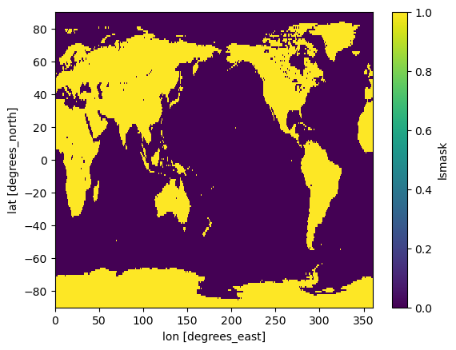

Generate land sea mask
This notebook provides a method to generate a landmask for lat-lon grid using the PMP’s create_target_grid and create_land_sea_mask functions.
Jiwoo Lee (LLNL), 2025-1-15
[1]:
from pcmdi_metrics.utils import create_target_grid
from pcmdi_metrics.utils import create_land_sea_mask
Generate your grid
Define your resolution in degree.
[2]:
#resolution = '2.5x2.5'
resolution = '1x1'
#resolution = '0.5x0.5'
[3]:
grid = create_target_grid(target_grid_resolution=resolution)
[4]:
grid
[4]:
<xarray.Dataset> Size: 13kB
Dimensions: (lon: 360, bnds: 2, lat: 180)
Coordinates:
* lon (lon) float64 3kB 0.5 1.5 2.5 3.5 4.5 ... 356.5 357.5 358.5 359.5
* lat (lat) float64 1kB -89.5 -88.5 -87.5 -86.5 ... 86.5 87.5 88.5 89.5
Dimensions without coordinates: bnds
Data variables:
lon_bnds (lon, bnds) float64 6kB 0.0 1.0 1.0 2.0 ... 359.0 359.0 360.0
lat_bnds (lat, bnds) float64 3kB -90.0 -89.0 -89.0 -88.0 ... 89.0 89.0 90.0Generate land sea mask for the grid
[5]:
mask = create_land_sea_mask(grid)
[6]:
mask.plot()
[6]:
<matplotlib.collections.QuadMesh at 0x151925630>
Optional: Apply different landsea mask generation method
This option uses the PCMDI method developed by Taylor and Doutriaux (2000) (https://pcmdi.llnl.gov/report/ab58.html)
[7]:
mask2 = create_land_sea_mask(grid, method="pcmdi")
[8]:
mask2.plot()
[8]:
<matplotlib.collections.QuadMesh at 0x151b6f4f0>

Save to a netCDF file
[9]:
ncfile = f"landmask_{resolution}_regionmask.nc"
ncfile2 = f"landmask_{resolution}_pcmdi.nc"
mask.to_netcdf(ncfile)
mask2.to_netcdf(ncfile2)
Quick check for the saved file
[10]:
import xarray as xr
ds = xr.open_dataset(ncfile)
[11]:
ds
[11]:
<xarray.Dataset> Size: 523kB
Dimensions: (lat: 180, lon: 360)
Coordinates:
* lat (lat) float64 1kB -89.5 -88.5 -87.5 -86.5 ... 86.5 87.5 88.5 89.5
* lon (lon) float64 3kB 0.5 1.5 2.5 3.5 4.5 ... 356.5 357.5 358.5 359.5
Data variables:
mask (lat, lon) int64 518kB ...[12]:
ds["mask"].plot()
[12]:
<matplotlib.collections.QuadMesh at 0x151e08a30>